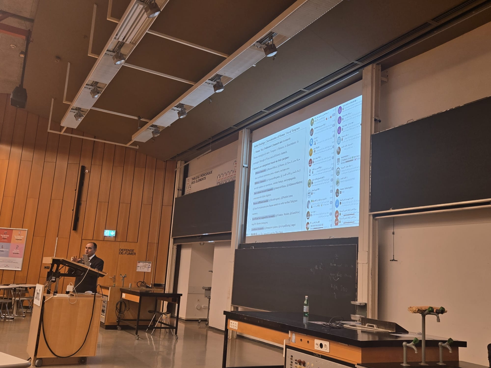
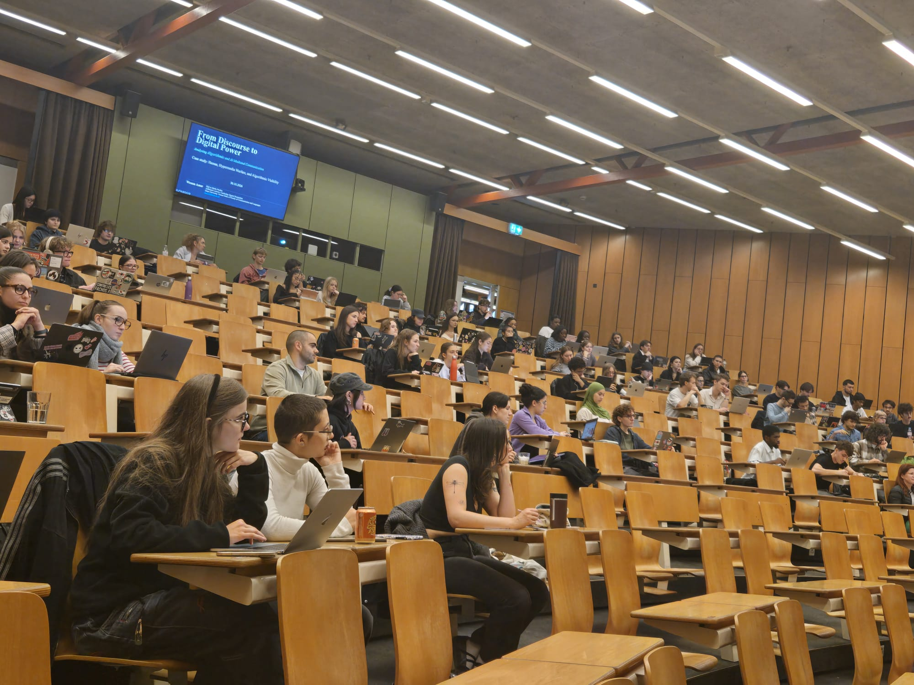
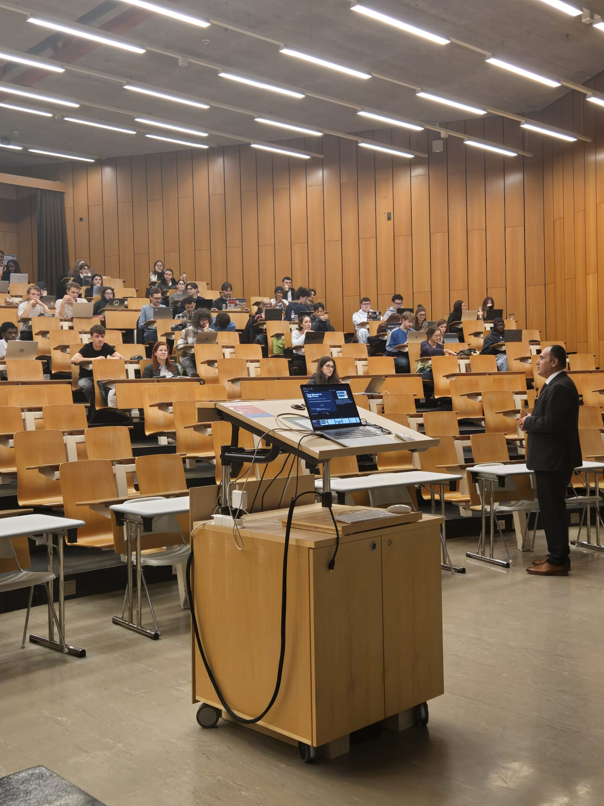
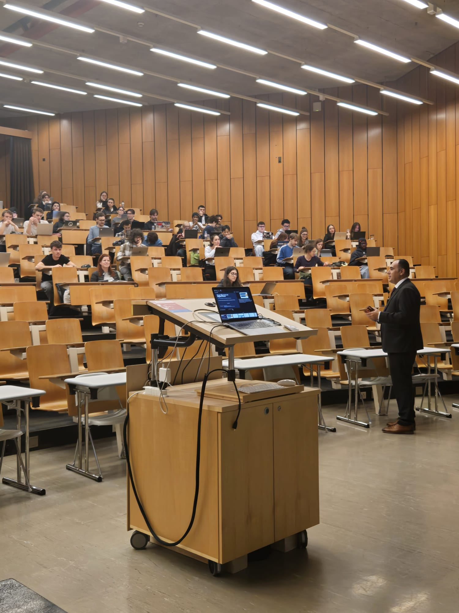

Invited Talks
Dr Mohammedwesam Amer Delivers Lecture “From Discourse to Digital Power: Analysing Algorithmic and AI-Mediated Communication” at the University of Lausanne
Dr Mohammedwesam Amer delivered an invited lecture titled "From Discourse to Digital Power: Analysing Algorithmic and AI-Mediated Communication," examining how artificial intelligence, platform governance, and algorithmic systems shape political communication, conflict narratives, and digital power in contemporary media environments.
Dr Mohammedwesam Amer delivered an invited lecture at the University of Lausanne, Switzerland, titled From Discourse to Digital Power: Analysing Algorithmic and AI-Mediated Communication. The lecture explored how political communication is increasingly shaped not only by language and discourse but also by digital infrastructures, social media platforms, artificial intelligence systems, and algorithmic forms of governance. Bringing together perspectives from media studies, political communication, digital humanities, conflict studies, and computational research, Dr Amer introduced his interdisciplinary framework of "hypermedia warfare" to explain how contemporary conflicts are increasingly fought through interconnected media environments where communication, visibility, legitimacy, and power become deeply intertwined. The presentation highlighted the importance of studying the relationship between discourse, technological infrastructures, and algorithmic systems in order to understand how meanings are produced, circulated, contested, and amplified in digital environments.
Drawing on several ongoing research projects, Dr Amer demonstrated how computational methods and critical discourse analysis can be combined to investigate digital political communication at scale while maintaining sensitivity to historical, cultural, and political contexts. Using original research on the Gaza War, Hamas-related digital communication, AI-mediated information environments, and algorithmic visibility, he examined how narratives circulate across platforms, languages, and media formats and how artificial intelligence increasingly influences the production, dissemination, and interpretation of information. The lecture presented findings from a longitudinal dataset of approximately 179,000 Telegram posts collected between 2015 and 2025 and explored broader questions concerning platform power, digital propaganda, synthetic influence, religious authority in the age of AI, and the politics of representation in algorithmically mediated communication. By integrating computational analysis, critical theory, and empirical research, Dr Amer highlighted both the opportunities and limitations of emerging technologies for understanding conflict, public discourse, and digital power, contributing to contemporary debates on artificial intelligence, media governance, and the future of political communication.



